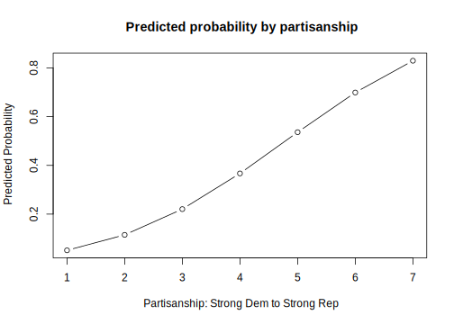
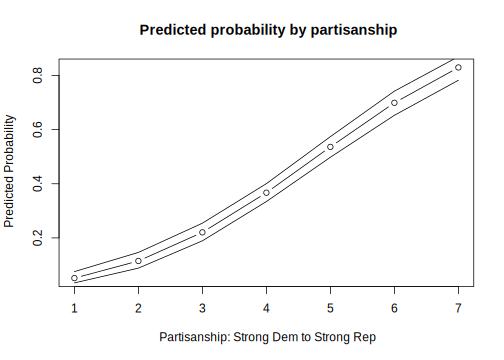
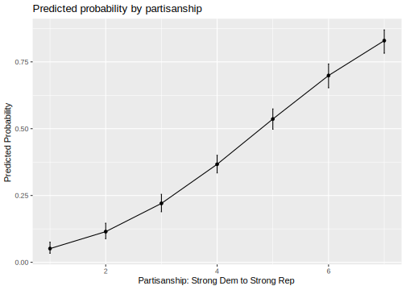

7.6 Week 4 Tutorial
Let’s return to the example at the end of section 6, and calculate predicted probabilities, now with estimates of uncertainty. Recall the Banks and Hicks data include the following variables below. We add partyid as a variable for this analysis.
abtrace1: 1= if the respondent thought the ad was about race. 0= otherwisecondition2: 1= respondent in the implicit condition. 2= respondent in one of four explicit racism conditions.racresent: a 0 to 1 numeric variable measuring racial resentmentoldfash: a 0 to 1 numeric variable measuring “old-fashioned racism”trumvote: 1= respondent has vote preference for Trump 0=otherwisepartyid: A 1 to 7 numeric variables indicating partisanship from strong Democrat to strong Republican. Below 4 is a Democrat/Democratic leaner, above 4 is a Republican/Republican leaner.
Let’s load the data again.
## install.packages("rio")
library(rio)
study <- import("https://github.com/ktmccabe/teachingdata/blob/main/ssistudyrecode.dta?raw=true")Let’s set the experiment aside for now and focus on vote choice as the outcome: trumvote. Let’s suppose we were interested in understanding whether partisanship influences vote choice.
- What would be a simple regression model we could run? (e.g., what would be on the left, what would be on the right?)
- What type of model should it be? (e.g., OLS, glm, logit, probit, etc.?)
- Run this model below
- What do you conclude about the influence of party on vote choice?
Try on your own, then expand for one solution.
fit1 <- glm(trumvote ~ partyid, data=study, family=binomial(link="probit"))
library(texreg)
texreg::knitreg(fit1)| Model 1 | |
|---|---|
| (Intercept) | -2.06*** |
| (0.13) | |
| partyid | 0.43*** |
| (0.03) | |
| AIC | 1056.38 |
| BIC | 1066.23 |
| Log Likelihood | -526.19 |
| Deviance | 1052.38 |
| Num. obs. | 1019 |
| p < 0.001; p < 0.01; p < 0.05 | |
In a glm model, we have to make a leap from a probit/logit coefficient to vaguely answer our research question. What we want to do instead, is become more focused in our research questions, hypotheses, and estimations to generate precise quantities of interest that speak directly to our theoretical questions.
Let’s try this again. Let’s be more focused in our question/hypothesis.
- As people shift from strong Democrats to strong Republicans, how does their probability of voting for Trump change?
- How can we transform our model from before into quantities that speak directly to this question?
Computing probabilities.
We only have one covariate, so this becomes an easier problem.
newdata.party <- data.frame(partyid = 1:7)
## Set type to be response
results1 <- predict(fit1, newdata = newdata.party, type = "response")| x |
|---|
| 0.0512844 |
| 0.1147444 |
| 0.2204047 |
| 0.3669367 |
| 0.5362029 |
| 0.6990679 |
| 0.8295963 |
How can we best communicate this to our readers?
Computing probabilities.
plot(x=1:7, y=results1,
main = "Predicted probability by partisanship",
type="b",
xlab = "Partisanship: Strong Dem to Strong Rep",
ylab="Predicted Probability")
library(ggplot2)
ggres <- data.frame(probs=results1, partisanship=1:7)
ggplot(ggres, aes(x=partisanship, y=probs))+
geom_line()+
geom_point()+
xlab("Partisanship: Strong Dem to Strong Rep")+
ylab("Predicted Probability")+
ggtitle("Predicted probability by partisanship")How can we improve this even further?
- Calculate uncertainty!
Again, because we only have one covariate, the process is a little more simple. Let’s use the predict function to calculate the standard errors for us on the link scale with se.fit = T and then construct our own confidence intervals.
Try on your own, then expand for the solution.
results1.link <- predict(fit1, newdata=newdata.party, type="link", se.fit=T)
results1.link$fit
1 2 3 4 5 6 7
-1.6325260 -1.2016765 -0.7708270 -0.3399775 0.0908720 0.5217215 0.9525710
$se.fit
1 2 3 4 5 6 7
0.10002223 0.07628414 0.05617531 0.04487352 0.04892006 0.06553079 0.08784628
$residual.scale
[1] 1Now for each value, we get the standard error estimate. We now have to convert these to the response scale.
m.results <- pnorm(results1.link$fit)
results1.lb <- pnorm(results1.link$fit - qnorm(.975)*results1.link$se.fit)
results1.ub <-pnorm(results1.link$fit + qnorm(.975)*results1.link$se.fit)
## Let's look at the results from the original point estimates and this approach
cbind(results1, m.results, results1.lb, results1.ub) results1 m.results results1.lb results1.ub
1 0.05128436 0.05128436 0.03373233 0.07543205
2 0.11474445 0.11474445 0.08831718 0.14636254
3 0.22040474 0.22040474 0.18917824 0.25439421
4 0.36693674 0.36693674 0.33435178 0.40051009
5 0.53620285 0.53620285 0.49800149 0.57407307
6 0.69906787 0.69906787 0.65294495 0.74220540
7 0.82959626 0.82959626 0.78242093 0.86965177Finally, let’s add it to our plot.
plot(x=1:7, y=results1,
main = "Predicted probability by partisanship",
type="b",
xlab = "Partisanship: Strong Dem to Strong Rep",
ylab="Predicted Probability")
points(x=1:7, y= results1.ub, type="l")
points(x=1:7, y= results1.lb, type="l")
library(ggplot2)
ggres <- data.frame(cbind(m.results, results1.lb, results1.ub), partisanship=1:7)
ggplot(ggres, aes(x=partisanship, y=m.results))+
geom_line()+
geom_point()+
#geom_ribbon(aes(ymin=results1.lb, ymax=results1.ub), alpha=.5)+
geom_errorbar(aes(ymin=results1.lb, ymax=results1.ub), width=.02)+
xlab("Partisanship: Strong Dem to Strong Rep")+
ylab("Predicted Probability")+
ggtitle("Predicted probability by partisanship")
The prediction package in R will give us a shortcut by calculating the confidence intervals for us. We can repeat the previous process inside this function.
# install.packages("prediction")
library(prediction)
## prediction can take a new dataframe or specific values of covariates
pred.results <- prediction(fit1, at=list(partyid = 1:7), type="response", calculate_se = T)summary(pred.results)| at(partyid) | Prediction | SE | z | p | lower | upper |
|---|---|---|---|---|---|---|
| 1 | 0.0512844 | 0.0105264 | 4.871990 | 1.1e-06 | 0.0306531 | 0.0719157 |
| 2 | 0.1147444 | 0.0147835 | 7.761644 | 0.0e+00 | 0.0857693 | 0.1437196 |
| 3 | 0.2204047 | 0.0166507 | 13.236974 | 0.0e+00 | 0.1877700 | 0.2530395 |
| 4 | 0.3669367 | 0.0168967 | 21.716505 | 0.0e+00 | 0.3338199 | 0.4000536 |
| 5 | 0.5362029 | 0.0194359 | 27.588317 | 0.0e+00 | 0.4981093 | 0.5742965 |
| 6 | 0.6990679 | 0.0228165 | 30.638670 | 0.0e+00 | 0.6543483 | 0.7437874 |
| 7 | 0.8295963 | 0.0222636 | 37.262407 | 0.0e+00 | 0.7859604 | 0.8732322 |
When we have covariates, we have a few more decisions to make about how to calculate quantities of interest and how to compute uncertainty. Let’s amend our model to include additional covariates.
fit2 <- glm(trumvote ~ partyid + racresent + oldfash, data=study, family=binomial(link="probit"))Now, we have the same research question, but we have covariates. We have to decide how we want to calculate the predicted probabilities of voting for Trump at different levels of partisanship.
- Where should we set
racresentandoldfashwhen computing these values?
Let’s suppose we want to hold them at observed values. This means we will calculate the average predicted probability of voting for Trump at each value of partisanship, holding the other covariates at observed values.
We can do this in a few ways.
Here, let’s do this manually:
bh <- coef(fit2)
## party id 1
X.1 <- model.matrix(fit2)
X.1[, "partyid"] <- 1
p.1 <- pnorm(X.1 %*% bh)
p.1.mean <- mean(p.1)
## party id 2
X.2 <- model.matrix(fit2)
X.2[, "partyid"] <- 2
p.2 <- pnorm(X.2 %*% bh)
p.2.mean <- mean(p.2)
## More efficient approach 1:
p.means <- rep(NA, 7)
for(i in 1:7){
X <- model.matrix(fit2)
X[, "partyid"] <- i
p <- pnorm(X %*% bh)
p.means[i] <- mean(p)
}
## More efficient approach 2:
myest <- function(value){
X <- model.matrix(fit2)
X[, "partyid"] <- value
p <- pnorm(X %*% bh)
p.mean <- mean(p)
return(p.mean)
}
p.means <- sapply(1:7, myest)Or, we can use prediction again.
pred.results2 <- prediction(fit2, at=list(partyid = 1:7), type="response")Let’s compare the output:
cbind(p.means, summary(pred.results2)$Prediction) p.means
[1,] 0.08296357 0.08296357
[2,] 0.14824083 0.14824083
[3,] 0.24098759 0.24098759
[4,] 0.35835987 0.35835987
[5,] 0.49072437 0.49072437
[6,] 0.62383575 0.62383575
[7,] 0.74331307 0.74331307What if we want uncertainty?
- We can bootstrap or simulate confidence intervals around each quantity of interest, or use a function to do this for us.
Bootstrap Details
## Step 1: sample new rows of the data and subset
wrows <- sample(x =1:nrow(study), size = nrow(study), replace = T)
subdata <- study[wrows, ]
## Step 2: run your regression model with the new data
boot.probit <-glm(trumvote ~ partyid + racresent + oldfash,
data=subdata, family=binomial(link="probit"))
## Step 3: generate average predicted probability
Xboot <- model.matrix(boot.probit)
Xboot[, "partyid"] <- 1
Bh <- coef(boot.probit)
p.boot <- mean(pnorm(Xboot %*% Bh))
## Step 4: wrap it in a function, make data generic
myboot <- function(df){
wrows <- sample(x =1:nrow(df), size = nrow(df), replace = T)
subdata <- df[wrows, ]
boot.probit <-glm(trumvote ~ partyid + racresent + oldfash,
data=subdata, family=binomial(link="probit"))
Xboot <- model.matrix(boot.probit)
Xboot[, "partyid"] <- 1
Bh <- coef(boot.probit)
p.boot <- mean(pnorm(Xboot %*% Bh))
return(p.boot)
}
## Step 5: Uncomment and replicate 1000 times
#bestimates.party1 <- replicate(1000, myboot(study))
## Extract confidence interval
#quantile(bestimates.party1, c(0.025, .975))We would then repeat this for each partyid value. Alternatively, we could use prediction!